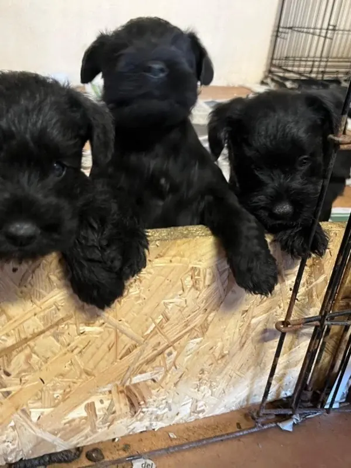
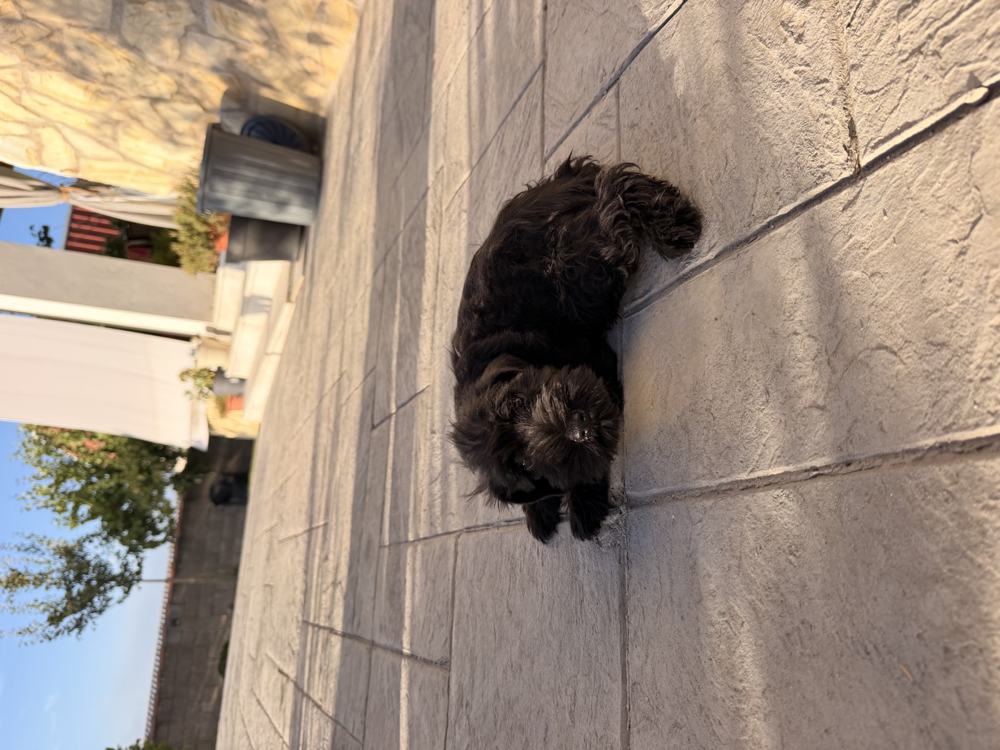

Schnauzer Miniatura en Cáceres — Cachorros Sal y Pimienta con Papeles
Criamos cachorros de Schnauzer Miniatura en Cáceres con más de 20 años de experiencia en la raza. Disponemos de Schnauzer Mini sal y pimienta, negro y negro con plata. Son activos, leales, no sueltan pelo en exceso y son ideales para pisos y familias con niños. Nuestros cachorros de Schnauzer Miniatura se entregan con toda la documentación: chip, vacunas, cartilla y contrato. Criadero familiar en Extremadura con Núcleo Zoológico registrado.

Schnauzer Mini negroTamaño
Peso adulto entre 4 y 8 kg. Compacto pero con gran presencia.
Poca muda
Apenas suelta pelo en casa si se cuida su manto. Suele tolerarse mejor con alergias leves.
Carácter
Activo, curioso y muy inteligente. Necesita estímulo mental y ejercicio diario.
Familia
Extraordinariamente leal a su familia. Buen guardián natural sin ser agresivo.
Todo lo que debes saber antes de traer un Schnauzer Mini a casa
Criamos en casa, con pocas camadas al año y con toda la documentación en regla. Esto es lo que nos diferencia.
Criados dentro de casa
Llevamos más de 15 años criando Schnauzer Miniatura en Cáceres. Nuestros cachorros nacen y crecen dentro de nuestra casa familiar, en contacto diario con personas, niños y otros animales. Ese entorno les da una socialización excelente y un carácter equilibrado desde el primer día.
Con todos los papeles en regla
Cada cachorro sale con cartilla sanitaria, chip registrado, vacunas al día, desparasitación y contrato de compraventa. Somos Núcleo Zoológico registrado en Extremadura, así que toda nuestra actividad cumple la normativa de bienestar animal. Consulta nuestra guía para comprar un cachorro antes de dar el paso.
Entregamos en toda España
Nuestros cachorros han llegado a familias de Madrid, Badajoz, Mérida, Plasencia y muchísimas otras ciudades del país. Si buscas un Schnauzer Miniatura con garantías, consulta nuestras camadas y lista de espera o escríbenos sin compromiso.
Schnauzer Miniatura negro: carácter y elegancia
El Schnauzer Miniatura negro es una de las variedades más demandadas de la raza, y en Deterrajaras contamos con líneas de competición supervisadas por Juanra, nuestro experto con más de 20 años de experiencia en competiciones nacionales.
Nuestros Schnauzer negros se caracterizan por un manto negro intenso y uniforme, sin manchas blancas ni zonas decoloradas, resultado de una selección genética rigurosa. Son ejemplares con temperamento equilibrado, estructura correcta y una presencia que se nota.
Si buscas un Schnauzer Miniatura negro en Cáceres o Extremadura, escríbenos y te contamos qué camadas tenemos previstas.

Preguntas frecuentes sobre el Schnauzer Miniatura
Muy poco dentro de casa, siempre que su manto se cuide bien. Tiene un pelo duro que no se cae como el de otras razas, pero el pelo muerto hay que retirarlo con stripping cada 3 o 4 meses, peluquería cada 6-8 semanas y cepillado 2 o 3 veces por semana. Sin esos cuidados, suelta más. Te lo contamos todo en ¿el Schnauzer Miniatura suelta pelo?
No completamente: ninguna raza lo es. Como suelta poco pelo y poca caspa, muchas personas con alergia leve lo toleran mejor que otras razas, pero no hay garantía. Antes de decidir, pasa tiempo con un Schnauzer y, si tienes alergia fuerte o asma, consúltalo con tu alergólogo. Comparamos razas en nuestra guía de perros hipoalergénicos pequeños.
Mide entre 30 y 35 cm a la cruz y pesa entre 4 y 8 kg. Es la versión pequeña de la raza: el Schnauzer mediano y el gigante son razas distintas y bastante más grandes. Por su tamaño y su carácter resistente encaja muy bien en pisos y con niños, siempre que salga a pasear a diario. Compáralo con el Caniche en nuestra comparativa de razas.
El estándar admite cuatro: sal y pimienta, negro, negro plata y blanco. El sal y pimienta es el más conocido y suele ser el más asequible; el negro plata y el blanco son menos habituales y más caros. Nosotros criamos sobre todo negro y sal y pimienta. El color influye en el precio, como explicamos en cuánto cuesta un Schnauzer Miniatura.
¿Buscas un Schnauzer Miniatura cachorro en España?
El Schnauzer Miniatura sal y pimienta es el color más tradicional y el favorito de los amantes de la raza. Nuestro criador, Juanra, lleva más de 20 años en competiciones con Schnauzer Mini a nivel nacional, lo que nos da un conocimiento de la raza que muy pocos criaderos tienen. Por su escasa muda, es además uno de los mejores perros hipoalergénicos pequeños para personas con alergia.
Entregamos cachorros de Schnauzer Miniatura en toda España. Familias de Madrid, Sevilla, Salamanca y toda Extremadura ya tienen en casa un cachorro Schnauzer Mini de Deterrajaras. Consulta las camadas y lista de espera o escríbenos.
¿Buscas entrega en tu ciudad? — criadero en Cáceres · Schnauzer Mini en Extremadura · Entrega a toda España